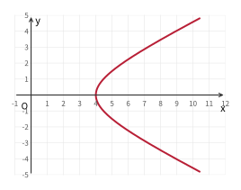
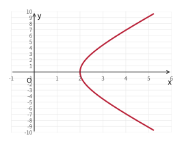
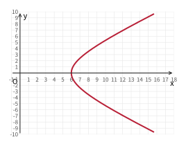

ホーム ＞ 数学C ＞ 媒介変数表示・極座標
別冊練習問題 6 の解答 媒介変数 t+1/t を消去（範囲に注意）
(1) \(t>0\) のとき、\(x=2\left(t+\dfrac1t\right),\ y=\left(t-\dfrac1t\right)\) で表される曲線の方程式を求めよ。（\(x\) の範囲にも注意）
2乗の差
\[\dfrac{x}{2}=t+\dfrac1t,\qquad y=t-\dfrac1t\]
消去
\[\left(\dfrac{x}{2}\right)^2-\left(y\right)^2=\left(t+\dfrac1t\right)^2-\left(t-\dfrac1t\right)^2=4\]
範囲
\(t>0\) で \(t+\dfrac1t\geqq2\) より \(x\geqq4\)。
\[\dfrac{x^2}{16}-\dfrac{y^2}{4}=1\quad(x\geqq4)\]
【答案】
\[\dfrac{x^2}{16}-\dfrac{y^2}{4}=1\ (x\geqq4)\]答
(2) \(t>0\) のとき、\(x=\left(t+\dfrac1t\right),\ y=2\left(t-\dfrac1t\right)\) で表される曲線の方程式を求めよ。（\(x\) の範囲にも注意）
2乗の差
\[x=t+\dfrac1t,\qquad \dfrac{y}{2}=t-\dfrac1t\]
消去
\[\left(x\right)^2-\left(\dfrac{y}{2}\right)^2=\left(t+\dfrac1t\right)^2-\left(t-\dfrac1t\right)^2=4\]
範囲
\(t>0\) で \(t+\dfrac1t\geqq2\) より \(x\geqq2\)。
\[\dfrac{x^2}{4}-\dfrac{y^2}{16}=1\quad(x\geqq2)\]
【答案】
\[\dfrac{x^2}{4}-\dfrac{y^2}{16}=1\ (x\geqq2)\]答
(3) \(t>0\) のとき、\(x=3\left(t+\dfrac1t\right),\ y=2\left(t-\dfrac1t\right)\) で表される曲線の方程式を求めよ。（\(x\) の範囲にも注意）
2乗の差
\[\dfrac{x}{3}=t+\dfrac1t,\qquad \dfrac{y}{2}=t-\dfrac1t\]
消去
\[\left(\dfrac{x}{3}\right)^2-\left(\dfrac{y}{2}\right)^2=\left(t+\dfrac1t\right)^2-\left(t-\dfrac1t\right)^2=4\]
範囲
\(t>0\) で \(t+\dfrac1t\geqq2\) より \(x\geqq6\)。
\[\dfrac{x^2}{36}-\dfrac{y^2}{16}=1\quad(x\geqq6)\]
【答案】
\[\dfrac{x^2}{36}-\dfrac{y^2}{16}=1\ (x\geqq6)\]答